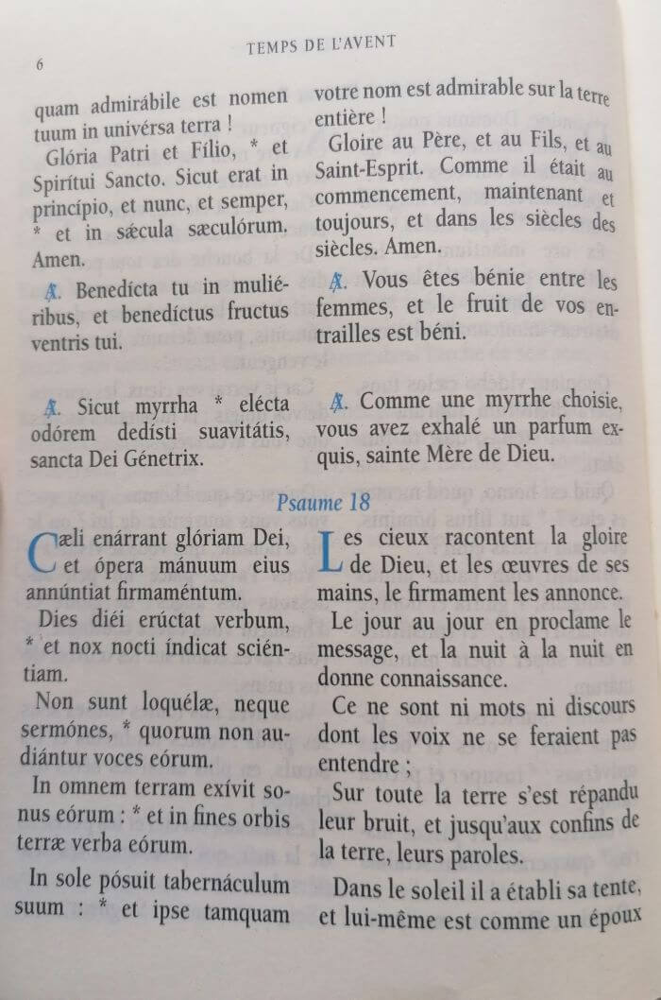

sainte-marie.ch
Le petit office de la Sainte Vierge

Le 13 juin 2023
Sommaire
- Qu'est ce que l'office des heures ?
- Présentation du petit office de la sainte vierge.
- Comment l'obtenir ?
- Comment le réciter ?
Qu'est ce que l'office des heures ?
Il s'agit de suites de prières (introduction, hymnes, psaumes, ...) qui se font à différentes heures, tout au long de la journée.
On distinguera 8 offices :
- Matines - Entre minuit et le lever du jour (ou alors, en même temps que les laudes)
- Laudes - À l'aube
- Primes - Début du travail
- Tierces - Troisième heure après le lever du soleil
- Sextes - Sixième heure après le lever du soleil
- Nones - Fin du travail
- Vêpres - Vers le coucher du soleil (ou alors, juste avant la messe du soir)
- Complies - Après le coucher du soleil, avant d'aller dormir
Tout le monde peut le reciter s'il le souhaite.
L'objectif n'est pas de se stresser en les récitant à l'heure exacte, mais
plutôt de manière répartie dans la journée.
Il faudra dédier un peu de temps pour la récitation des offices.
Voilà un aperçu de la quantité de temps nécessaire:
les matines sont les plus longues et me prennent 15 minutes,
les laudes 10 minutes,
les primes, tierces, sextes et nones
5 minutes chacun,
les vêpres 15 minutes (chanté et en latin) et les complies 7.
Au total, j'en suis à 1h15.
On pourrait se demander comment est-ce que l'on tient pour ouvrir sept fois par jour son petit office, cela tous les jours sans exception.
Et bien en fait, c'est un peu comme le rosaire. Il permet de se rapprocher de Marie (et conséquemment de Jésus) et de rester accrocher fermement à notre foi. Une fois que l'on accepte de le réciter dans l'optique de rester proche du Père, la force de continuer à le réciter sera là, tout naturellement
Cette dévotion reste tout de même plus compliquée à mettre en place et à tenir que le chapelet.
On parle de 1h15 de prières lues et réparties en 7 fois tout au long de la journée, contre 25-30 minutes de prières
apprise par-cœur et récitées en une seule fois pour le chapelet.
Cela dit, elle en vaut vraiment la peine d'être mise en pratique et est pour moi bien plus efficace que le rosaire (qui lui-même est déjà très efficace).
Présentation du petit office de la sainte vierge.

Le petit office fait pour moi partie des plus belles dévotions
à la Vierge.
La première version du petit office de la st Vierge remonte au VIII è. siècle !
Avant que Vatican II ne l'ait complétement enterré avec la reforme sur la liturgie des heures.
Les hymnes et prières sont très poétiques.
Voici par exemple le passage d'une hymne :
Ô la plus glorieuse des vierges,
Plus élevée que les astres,
Vous nourrissez de votre lait,
Votre créateur devenu petit enfant.
Ce que le pauvre Ève nous avait ravi,
Vous le rendez par ce fils béni,
Afin que les malheureux y entrent,
Du ciel vous ouvrez les portes.
Vous êtes la porte d'en haut,
Et la cour scintillante de lumière,
La vie nous est donnée par la Vierge,
Nations rachetées, célébrez-là.
Gloire soit à vous Jésus,
Qui êtes né ne la Vierge,
Comme au père et à l'esprit fécond,
Dans les siècles éternels.
Amen
Chaque page est divisée en deux colonnes : la première en latin et la seconde en français.
Ainsi il est possible de réciter ou chanter l'office dans la langue de son choix.
Il est aussi possible de mixer les deux langues.
Par exemple en chantant les hymnes et antiennes en latin et en récitant en français les psaumes.
Au fur et à mesure que les mois passent, on se lie intimement aux prières de l'office.
L'office des heures ne doit pas être vécu comme un passe-temps, mais comme une vraie dévotion, un sacrifice pour le Christ, par Marie.
Il s'agit de prières incroyablement intimes si vécues avec dévotion.
Disons que si le chapelet est la chaîne qui nous tient enchainés à Marie, le petit office est sa main droite qui nous tient embrassés.
Comment obtenir le petit office de la sainte vierge ?
En l'achetant en ligne (Ex: Payot.ch)
Attention à l'ancienneté du livre, les vieilles versions de ne sont qu'en latin.
Les éditions sainte Madeleine proposent des version double colonnes "latin - français"
Comment le réciter ?
Commençons délicatement.
Ceux qui ne récitent pas déjà les heures ne peuvent pas passer du jour au lendemain à 1h10 de prières divisées en 7 fois, cela 365 jours par an.
Ça ne fonctionnera tout bonnement jamais.
Il est bon de commencer avec une version "ultra light" du petit office à réciter chaque jours (téléchargement ici). C'est avec ce document que j'ai commencé.
Ensuite, on pourra véritablement commencer la récitation de notre bréviaire de manière plus complète.
Le bréviaire possède deux marques pages. Le premier est positionné à la première page de l'office des Matines. Le second peut être positionné sur la première page des Vêpres.
Il suffit de commencer à la première page de l'heure à réciter et ensuite de tourner les pages jusqu'à la fin.
Exception faite des jours de fêtes, là il faut aller chercher des hymnes et antiennes propre au jour de fête à la fin du bréviaire.